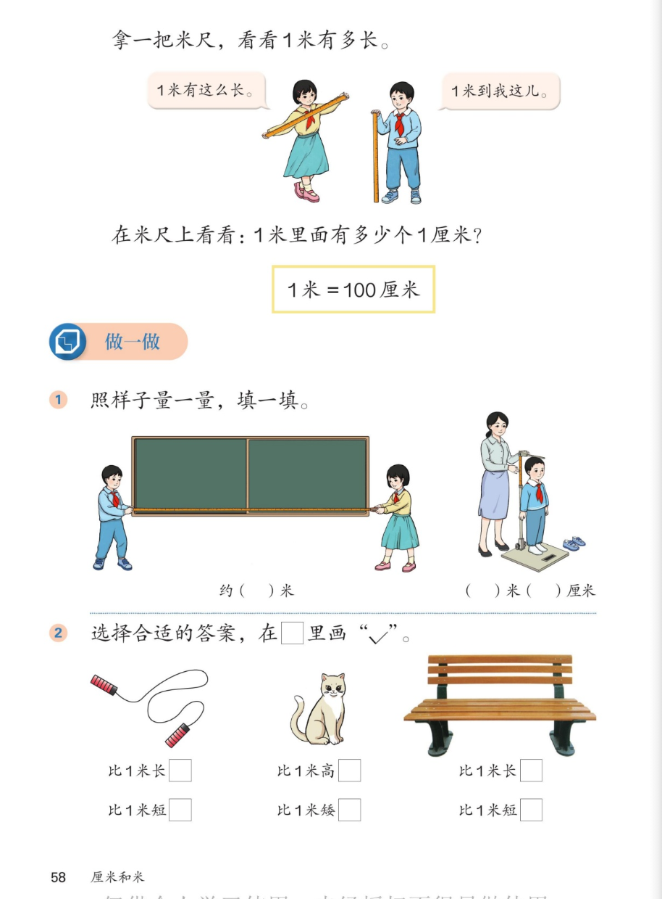

🔊 四、厘米和米 · 课本第 58 页 · 认识米 · 1 米=100 厘米
人教版《数学》二年级上册 · 有声图文带读 · 先想后看解析 · 1 米有多长 · 选择合适的答案
题数
6
认知
2
强化
3
拓展
1
本页重点
1米的长度 · 1米=100厘米 · 比1米长还是短
🎧 分两步学：
① 解析教材图片
——纯声音读图，读到哪一块哪一块闪动提示；关键处先倒计时让你思考，再在图片下方给出解析并朗读。
② 分层提问练习
——六道分层题（认知 / 强化 / 拓展），先思考再展开解析、朗读参考答案；这一步不再回到图片。
也可以随时点任意一句话、图上任意一块单独听；点课本文字卡还会展开答案。
教材图片（点块听读，读到哪块哪块闪）

📖 人教版《数学》二年级上册 · 课本第 58 页 · 图片仅供个人学习，版权归人民教育出版社所有
🤔 想一想（点我可跳过）
课本的文字（点句子：听读 + 看答案）
1 米有多长
用身体记住 1 米
看答案 ▾
米尺上
0 到 100 厘米
的长度就是 1 米；
女孩两臂张开比划：1 米有这么长；
男孩说：1 米
到我这儿
（到胸口附近）。
💡 记住 1 米大约到自己身体的哪个位置
关键关系
1 米 = 100 厘米
看答案 ▾
米尺上每一小格 1 厘米，数一数：
1 米里面有 100 个 1 厘米
；
所以
1 米＝100 厘米
（1m＝100cm）；
米和厘米之间换算：2 米＝200 厘米，反过来 200 厘米＝2 米。
做一做1
量黑板与量身高
看答案 ▾
黑板的长：用米尺量，教室黑板常见大约
3～4 米
（以实际测量为准）；
身高：站直量，比如
1 米 30 厘米
（每个同学不一样）；
💡 长度＋身高都用"米和厘米"一起说
做一做2
比 1 米长还是短？
看答案 ▾
跳绳展开来 →
比 1 米长
（√）；
猫蹲着 →
比 1 米矮
（√）；
长椅 →
比 1 米长
（√）。
方法：和 1 米比一比，或想一想生活中的实际样子。
分层提问练习（先想后看解析）
🧍
认知
1 米大约到自己身体的哪个位置？
看解析
🤔 想一想
解析：
图上男孩：1 米
到胸口附近
；
可以用米尺在自己身上
做个记号
，随时比一比。
📏
认知
1 米里面有多少个 1 厘米？
看解析
🤔 想一想
解析：
1 米＝100 厘米
；
米尺上一小格 1 厘米，一共 100 格。
✅
强化
跳绳、猫、长椅，各比 1 米长还是短？
看解析
🤔 想一想
解析：
跳绳
比 1 米长
；猫
比 1 米矮
；长椅
比 1 米长
；
想象 1 米在自己身上到胸口，一比就出来了。
🧑🏫
强化
量黑板的长，为什么用米不用厘米？
看解析
🤔 想一想
解析：
黑板约 3～4 米，用厘米说就是 300～400 厘米，
数太大
；
用米量：
数小、好说、好记
。
🔁
强化
2 米是多少厘米？300 厘米是多少米？
看解析
🤔 想一想
解析：
1 米＝100 厘米 → 2 米＝
200 厘米
；
300 厘米里有 3 个 100 →
3 米
。
💡 记住 1 米=100 厘米，换算就不用怕
🌈
拓展
不用尺子，怎么估计教室里物体比 1 米长还是短？
看解析
🤔 想一想
解析：
身上找参照
：1 米到胸口，两臂张开后比一比；
先估计再测量验证，误差会越来越小。
🌈 估一估、量一量，1 米记心中
① 解析教材图片
② 分层提问练习
⏹ 停止
纯声音 + 高亮跟随 · 想好才出解析
← 返回导航